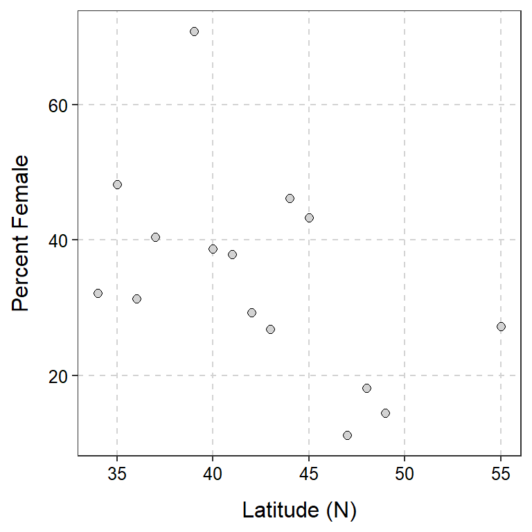
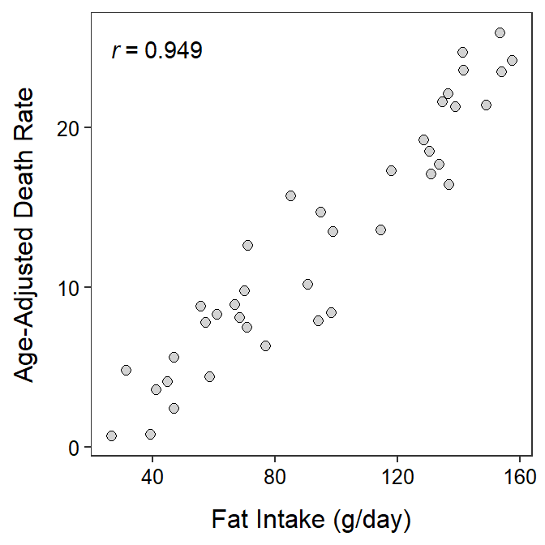

Scatterplots
 Kelly (1998) used data from the Christmas Bird Count (in 1994) to examine the latitudinal variation in the sex ratio of Eastern Belted Kingfishers (Ceryle alcyo). The scatterplot below illustrates the relationship between the percent of female Kingfishers and the latitude of the survey.
Kelly (1998) used data from the Christmas Bird Count (in 1994) to examine the latitudinal variation in the sex ratio of Eastern Belted Kingfishers (Ceryle alcyo). The scatterplot below illustrates the relationship between the percent of female Kingfishers and the latitude of the survey.

Use this scatterplot to answer these questions.
- What is an individual in this example?
- What types of variables are the two variables used here?
- What was the maximum latitude examined?
- What was the minimum percent of females observed?
- What are the values for both variables for the point at the very top of the plot?
- How many surveys recorded fewer than 30% female Kingfishers?
- How many surveys were between 40 and 45oN?
- What is the association exhibited in this plot?
Associations I
For each situation below, identify (a) the response variable (if possible) and (b) whether you would expect a positive, negative, or no (neutral) association between the pair of variables. Explain your reasoning for both answers.
- Weight and gas mileage of a car.
- Proportion of the population that was vaccinated and proportion of the population that became ill.
- The expected salary of an individual and how many years they invested in post-secondary education.
- Exam score and age of the student’s mother.
- Mean summer temperature and proportion of households that have an air conditioner (recorded for communities from across the U.S.).
Animal Fat and Breast Cancer
Carroll (1975) examined the relationship between per capita consumption of animal fat (g/day) and age-adjusted death rate from breast cancer for 39 countries. Use the following results from her data to describe the bivariate relationship between these two variables (i.e., perform a bivariate EDA).

Urban Runoff
Urbanization poses a major threat to stream and watershed ecosystems. One aspect of urbanization is the conversion of natural areas to land with impervious surfaces, thus increasing runoff of rain and, likely, pollutants. A University of Washington researcher recorded the percent of impervious land and the benthic index of biotic integrity (IBI) for 14 areas in the state of Washington. The IBI has been described as a measure of “the capability of supporting and maintaining a balanced, integrated, adaptive community of organisms having a species composition and functional organization comparable to that of natural habitat in the region.” In this example, the researchers were attempting to identify how the percentage of impervious surfaces in the area affects the IBI. The data for this study are below (FYI, much more information can be obtained at the QELP site).
imperv 60 43 43 34 27 25 21 18 11 8 8 8 7 7 5 4 2
IBI 9 11 13 23 31 31 21 23 27 37 39 29 31 43 33 35 37
Load these data into R and answer the questions below.
- What is the response variable?
- What is the explanatory variable?
- Describe the relationship between IBI and the percent of impervious area (i.e., perform a bivariate EDA).